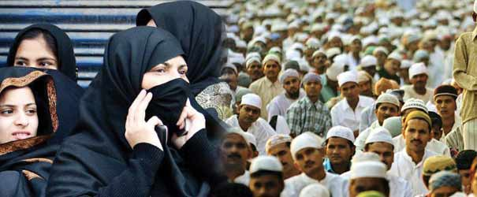

The objective of the Scheme is to provide financial assistance to the poor and meritorious students belonging to minority communities to enable them to pursue professional and technical courses.
These scholarships are available for studies in India only and will be awarded through an Agency designated by the State Government/UT Administration for this purpose.Every year 20000 scholarships will be distributed among the students of minority communities throughout the country.
Conditions for Scholarship
- Financial assistance will be given to pursue degree and/or post graduate level technical and professional courses from a recognized institution. Maintenance allowance will be credited to the student’s account. The course fee will be paid by the State Department directly to the institute concerned.
- Students who get admission to a college to pursue technical/professional courses, on the basis of a competitive examination will be eligible for the scholarship.
- Students who get admission in technical/professional courses without facing any competitive examination will also be eligible for scholarship. However, such students should have not less than 50% marks at higher secondary/graduation level. Selection of these students will be done strictly on merit basis.
- Continuation of the scholarship in subsequent years will depend on successful completion of the course during the preceding year.
- A scholarship holder under this scheme will not avail any other scholarship/stipend for pursuing the course.
- The annual income of the beneficiary/parent or guardian of beneficiary should not exceed Rs.2.50 lakh from all sources.
- The state department will advertise the scheme every year latest by 31st March and receive the application through the concerned institutions.
- After scrutinizing the applications, the state department will prepare a consolidated budget for all eligible students and send an application in the prescribed pro-forma for release of fund from the Ministry of Minority Affairs for distribution of scholarship giving the details of each students viz. name, permanent address, telephone number, annual course fee, name & address of institute, whether hostler or day-scholar, etc.
- The application for release of fund from the state department must be received in the Ministry by 30th of September every year.
- The state department will maintain separate bank account and records relating to the funds received from the Ministry and they will be subjected to inspection by the officers of the Ministry or any other agency designated by the Ministry.
- The fund for distribution of scholarship in subsequent year will be released after receiving the utilization certificate for the previous year. Annual inspection by the officers of the Ministry or any other agencies designated by the Ministry will also be carried out.
- 30% scholarship will be reserved for girls of each minority community in a state which is transferable to male student of that community in case of non-availability of female candidate in that community in the concerned state.
- If the target for distribution of scholarship to a particular minority community in a state/UT is not fulfilled, it will be distributed among the same minority community of other States/UTs strictly in accordance with the merit.
- A student residing in a particular State/UT will be entitled for scholarship under the quota of that State/UT only irrespective of his place of study.
- The number of scholarship has been fixed state-wise on the basis of minority population of the states/UTs. Within the state-wise allocations, the applications from reputed institutions will be exhausted first. The list of such institutions will be made available by the Ministry of Minority Affairs.
- The scheme will be evaluated at regular intervals and the cost of the evaluation will be borne by the Ministry of Minority Affairs under the provision of the scheme. An additional provision of 3% of the total budget will be made to meet the administrative and allied costs viz. expenditure on monitoring of the scheme, impact study, evaluation study, purchase of office equipments, engaging of contract employees, if necessary and other expenditure to run the cell etc. This will be shared between the Ministry of Minority Affairs, Government of India and the State Governments/UT Administration.
For more information visit:Here